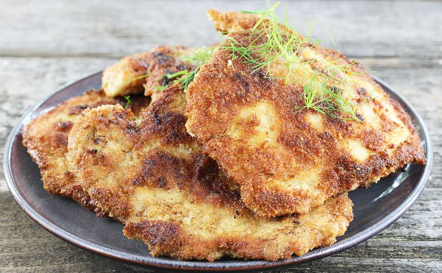

Blok kulinarny Maksa
Blok kulinarny Maksa
Proste i super przepisy na jedzenie
Aktualna strona: Dania mięsne / Schabowe
Kotlet Schabowe
To mój najlepszy i bardzo prosty sposób na przyrządzenie idealnych
kotletów schabowych!
Schabowe z chrupiącą panierką!

Składniki
- 0.5kg Schab bez kości
- 5g Przyprawa Ziarenka Smaku Uniwersalne WINIARY
- 20g Mąka
- 20g Bułka tarta
- 1 Jajko
- trochę Sól
- trochę Pieprz